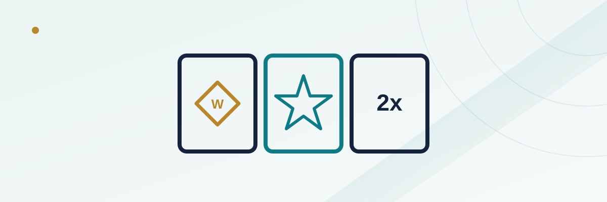

Wild Symbols, Scatters, and Multipliers: How Each Changes a Slot's Math

Open ten different online slots and you'll see ten different themes, but strip away the artwork and almost every one of them is built from the same three moving parts: wild symbols, scatter symbols, and multipliers. They show up under dozens of marketing names — sticky wilds, roaming wilds, cascading multipliers, free-spin triggers — but the underlying mechanics repeat constantly once you know what to look for. This guide walks through what each symbol type actually does to a spin's math, with worked numbers, so the next time a promo screen flashes "5x WIN MULTIPLIER" you know roughly what that's doing under the hood.
In this guide
Wild symbols: substituting for whatever's missing
A wild symbol stands in for almost any other regular symbol on the reels (scatters and bonus symbols are usually excluded) to complete a winning combination that would otherwise have missed. Land four matching symbols plus a wild in the fifth position on a payline, and the game treats it as five of a kind. The basic version appears on a single reel position; variations build on top of that foundation — stacked wilds fill an entire reel at once rather than one cell, expanding wilds grow to cover a full reel after landing, and walking or sticky wilds move or stay in place across multiple spins in a bonus round.
What a wild doesn't do is change the paytable itself. A five-of-a-kind combination still pays whatever the paytable says it pays whether it was formed naturally or completed with a wild — the wild simply raises how often that combination actually happens. Designers account for this when building the reel strips: adding more wild positions increases hit frequency for the combinations involving it, so the rest of the reel's weighting gets adjusted to keep the game's overall return to player (RTP) at its intended target rather than drifting upward on its own.
Scatter symbols: paying no matter where they land
A scatter symbol breaks the normal rule that symbols need to line up on a payline to count. Land the required number of scatters anywhere on the visible grid — regardless of reel, row, or whether they're even adjacent to each other — and the game pays out or triggers a feature. A common structure looks something like three scatters paying 5 times the total bet, four paying 20 times, and five paying 100 times, though the exact numbers vary enormously by game. In most slots, the scatter's real job isn't that direct payout at all — it's acting as the key that unlocks the free-spin round, which is usually where the bulk of a modern slot's volatility and win potential actually lives.
Scatters and wilds are generally kept as separate, non-overlapping roles: a wild can't usually substitute for a scatter to help you reach the trigger count, and a scatter typically can't fill in for a regular symbol in a payline combination. That separation is deliberate — it keeps the "can I trigger the bonus" probability and the "can I complete this combination" probability as two distinct levers the designer can tune independently.
Multiplier symbols: how a 2x or 10x tag actually works
A multiplier takes a win and scales it by a fixed or escalating factor. It shows up in a few different forms that are worth telling apart: a multiplier value attached to a wild symbol (the wild completes the combination and also carries a "3x" tag that multiplies that specific win), a multiplier that applies to an entire spin's total win regardless of which lines hit, or a progressive multiplier that climbs with each consecutive win in a cascading or "tumbling" bonus round — often starting at 1x and increasing by a fixed step after every successive hit until the sequence ends or a cap is reached.
The distinction between "multiplies this one combination" and "multiplies the entire spin" matters more than it sounds like it should, because the two produce very different outcomes on the same spin, and the paytable or help screen is the only reliable way to know which rule a given game is using.
A worked example: stacking a multiplier on a wild win
Say a $1 spin lands a three-of-a-kind combination on a payline that pays 10 times the bet on its own — a $10 win. If one of those three symbols was actually a wild carrying a 3x multiplier tag, the math becomes $10 multiplied by 3, for a $30 total win from that single line. Add a second winning line on the same spin with no wild involved, paying its own $4 straight, and the full spin pays $34 — the multiplier only touched the line it was actually part of, not the unrelated second line. Change the rule to "multiplies the entire spin's total" instead, and that same 3x would apply to the full $14 combined win for a $42 payout — a meaningfully different outcome from an identical set of symbols, which is exactly why the specific wording in a game's rules screen is worth the ten seconds it takes to check.
| Symbol type | What it does | Typical effect on the math |
|---|---|---|
| Wild | Substitutes for other symbols to complete combinations | Raises hit frequency; doesn't change the paytable itself |
| Scatter | Pays or triggers a feature based on count anywhere on the grid | Usually the gateway into the game's highest-variance round |
| Multiplier | Scales a win by a fixed or escalating factor | Can swing a win's size dramatically, especially in escalating/cascading forms |
Why bonus rounds feel so much more volatile
Free-spin rounds in most modern slots layer all three mechanics on top of each other rather than using them in isolation. Scatters are what get you into the round in the first place; once inside, wild density is frequently increased compared to the base game, and multipliers are often set to escalate with each consecutive win rather than staying fixed, especially in cascading or "tumbling" game engines where symbols clear and new ones drop in to form chains of wins within a single spin. That combination is why a bonus round can swing from a modest win to a game's advertised maximum multiplier in a way the comparatively calm base game never does — see our guides on max win caps and slot volatility for how that shows up in a game's advertised numbers.
Reading a slot's paytable before you play
Regulated online slots are required to disclose exactly how each special symbol functions in an in-game help, info, or paytable screen, usually accessed with an "i" icon near the spin button. That screen is where you'll find whether multipliers stack additively or multiplicatively when more than one is active, whether a wild can combine with a scatter at all, what the maximum multiplier cap is if there is one, and whether a progressive multiplier resets between spins or only between full bonus rounds. It's worth the brief read before you commit real money to a new title — the differences between two games that look visually similar can be larger than they first appear.
Frequently asked questions
Do more wild symbols on the reels mean better odds for the player?
Not necessarily. Designers typically adjust other parts of the reel weighting or paytable to keep the overall RTP at its intended target, so adding more wilds doesn't automatically translate into a looser game.
Can a symbol be both a wild and a scatter?
Usually not — most games keep the two roles separate so the odds of triggering a bonus and the odds of completing a line combination can be tuned independently. Some games do experiment with hybrid "wild scatter" symbols, so it's still worth checking the specific rules.
Do multipliers apply to the whole spin or just one winning line?
It depends entirely on the game, and the difference can change your payout significantly on an identical set of symbols. The paytable or help screen will state which rule applies — don't assume.
Why do free-spin bonus rounds feel so much swingier than the base game?
Because scatters, higher wild density, and escalating multipliers are usually concentrated there by design. The base game tends to be comparatively calm specifically so the bonus round can carry most of the game's advertised upside.